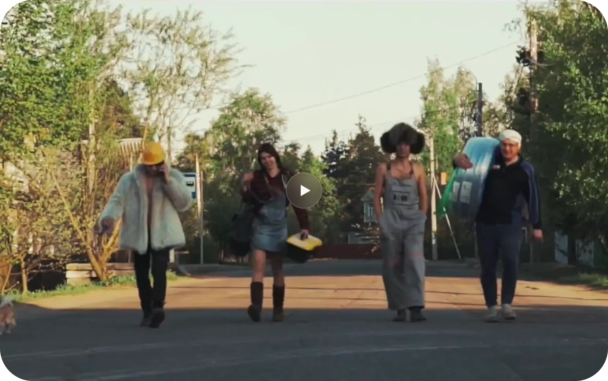

В 2003 году я учился на 5 курсе ГУТ имени проф. М.А. Бонч-Бруевича. Примерно за полгода до окончания, друг предложил вместе с ним пойти поработать сантехником. Несмотря на то, что слово «сантехник» для меня на тот момент было едва ли не ругательным, но з.п. около 800 ₽ в день была для меня тогда значительной, и я согласился. Что и где конкретно нужно будет делать особо не уточнял. Почему‑то предполагал, что буду ходить с другими сантехниками по затхлым подвалам и ремонтировать канализацию. Или по квартирам устанавливать унитазы. Вот такие у меня были стереотипы. Задерживаться более месяца на такой работе не собирался.
Но реальность оказалась совершенно другой.
Утром я встречался не с классическими сантехниками из ЖЭКа, а с молодыми парнями чуть старше меня, садился к ним в машину, и мы отправлялись загород в строящийся частный дом. И все эти дома были не стандартными, а сплошь премиум класса. И материалами они работали только премиальными. Несмотря на то, что первые две недели я только долбил и штробил стены с полами, работать с коллегами было интересно и весело, что не мало важно. И оплата радовала.
Спустя несколько недель, я уже понимал, что оказался в интересной фирме, которая занимается отоплением и водоснабжением в сплошь элитных домах. Иногда были и квартиры подобного уровня от 100 до 300 кв.м.
Все объекты монтировались только по проектам, которые были дотошно и качественно проработаны, а отрисованы максимально понятно для монтажника. Чуть позже я узнал, что их все продумывал, просчитывал и чертил владелец фирмы и фанат своего дела — Павел Мостовой.
Проработав около месяца, я познакомился практически со всеми сотрудниками, которые представляли из себя 4 бригады монтажников, одного прораба и сам великий и ужасный — Паша.
В общем, если в начале я планировал побыть месяц чернорабочим-подсобником у сантехников, чтобы немного заработать денег, а затем по‑быстрому свалить и найти более благородную и перспективную работу, то по происшествии этого срока я понимал, что работаю с монтажниками премиальных инженерных систем со сдельной зарплатой, величина которой зависит только от меня. Поэтому из кожи вон лез, перевыполняя поставленные задачи, дабы создать у вышестоящих коллег заинтересованность в себе.
Одним из самых главных факторов положительного восприятия работы был именно Паша. Он был и остаётся фанатом своего дела (сейчас исполнил свою мечту и живёт на Филиппинах, где удалённо всё также проектирует инженерию и занимается вторым своим любимым делом — дайвингом). После учёбы в институте он около 10 лет монтировал отопление с водоснабжением и проектировал. А когда заказов стало значительно больше, то открыл фирму, которую назвал «ВиВО» (Водоотведение, Водоснабжение, Отопление), как факультет, на котором учился. И с этого момента стал только руководить и проектировать. В неё то я случайно и попал практически сразу после открытия.
Он мог часами рассказывать и показывать, рисуя схемы и графики для понимания монтажа. Учил правильно разбираться в проектах, которые делал для каждого объекта, что значительно упрощало работу и позволяло нам — новоиспечённым монтажникам — монтировать без большого опыта под контролем прораба. Самозабвенно учил правильно монтировать.
Достаточно часто нас штрафовал за косяки. Тогда многие парни на него обижались, но я достаточно быстро понял, что адекватные штрафы за реальный косяк — это 100% положительный воспитательный момент, который, если ты не совсем идиот, заставляет тебя запомнить навсегда этот момент и не повторять его более.
В общем и целом, проработал я в ВиВО около 7 лет, а потом примерно в 2010 году ушёл в свободное плавание. Самостоятельно находил заказы, но в основном заказы сами находили меня по сарафану. Сарафан работал хорошо, так как эстетике я уделял внимания больше всего, что оценивали заказчики и их прорабы, которые и предлагали впоследствии другие объекты.
Примерно в 2012 году мне стало безумно жаль, что мой монтаж видят только несколько человек (прораб, другие строители на объекте и заказчик), а потом всё заливается стяжкой и видны только коллекторы и котельная. Да и то только людям, находящимся непосредственно на объекте.
Будущим заказчикам передавалось всё из уст в уста. А хотелось просто показать... и получить заказ.
Логичным окончанием этих умозаключений стало приобретение полупрофессионального фотоаппарата и фотофиксация своих работ.
Вот здесь их можно посмотреть и понять, как зародилась эстетика работ нынешних монтажников нашей фирмы
Примерно в 2014 году появилось название «Санкт-Техник». И вышло это так.
Я приехал со своим напарником на очередной объект. Там была проходная с двумя охранниками.
Один из охранников, увидев нас, проорал: «О, сантехники приехали».
А второй почему‑то его поправил — «Это не сантехники. Это СанктТехники».
Это слово засело у меня в голове, а осознав его смысл — «Святой Техник» — я в тот же момент влюбился в него полностью и без остатка. Предложил тогдашнему партнёру так себя называть. Он поддержал, и мы на спецодежде вышили это название. Через короткий промежуток времени мы с ним расстались и, так как он совершенно не претендовал на это название, оно осталось со мной.
В 2015 году увидел на Авито объявление некоего Михаила, что у него много заказов на монтаж отопления в частных домах и он набирает прорабов/монтажников. Позвонил ему и в разговоре получил подтверждение, что заказов много, а нормальных исполнителей нет. Как сейчас помню, что одному знакомому строителю сказал тогда, что еду на встречу, которая, скорее всего, перевернёт мою жизнь. И так и произошло).
Приехав на встречу, ответил на все вопросы, показав, что без проблем смонтирую отопление и водоснабжение в частном доме. Узнал, что объекты он получал от одного удачно написанного объявления на Авито (которое, кстати, висит там до сих пор). И предложений было не мало, хоть заказчики оттуда были с бюджетами средними и ниже среднего, — душили нас тогда по ценнику немилосердно. Но тогда и это для меня было верхом желаний.
Поговорив на первой встрече достаточно долго, Миша тут же дал мне два горящих объекта — один доделать после его нерадивого монтажника и один смонтировать с нуля. Я с помощником быстро закрыл вопросы по ним...
Миша был под большим впечатлением от качества и эстетики.
Затем смонтировал так же ещё несколько.
Через какое‑то время он предложил стать его партнёром и открыть фирму, в которой я должен был отвечать полностью за монтаж, а он за продажу материалов и развитие. Конечно, я согласился.
Объекты шли. Квалифицированных монтажников катастрофически не хватало. Примерно для половины текущих объектов я набирал студентов и других людей без опыта и каждое утро на объектах давал задание — что нужно смонтировать за день. На следующее утро проверял, что и как сделано и ставил следующую задачу. Так достаточно неплохо монтировал объекты.
Текучка кадров была огромная, так как абсолютное большинство не устраивали меня отношением к делу. Новые люди без опыта и с опытом появлялись постоянно и увольнялись мной или уходили сами. Несколько человек меня кинули на деньги, инструмент и материал.
Но по крупицам я отбирал самородков, и команда собиралась. Года через три процентов 60 из нынешних наших парней уже со мной работали постоянно. И качество, и эстетика у всех объектов была на высоте несмотря на то, что монтаж осуществлялся недорогими материалами и с небольшой ценой за работы.
Завели группу в ВК и начали выкладывать там все смонтированные объекты. Через некоторое время я завёл аккаунт в Инстаграме, который быстро стал раскручиваться.
Объектов становилось больше, мы стали достаточно известны в Питере. Это были золотые времена нашей фирмы. Мы даже сняли клип на конкурс, который организовал «Петрович». Идея моя, музыку написала жена, слова написал мой брат, пою я. В нём снялись я, жена, брат и мой партнёр Миша. Сняли его за 20т.р. Кому интересно, вот он:

В конце 2018 года наши взгляды на дальнейшее развитие с партнёром разошлись, и мы расстались.
Для меня расставание было достаточно напряжённым, так как рекламой, появлением заказов, поставкой материалов, бухгалтерией и развитием занимался он. Я, напомню, отвечал только за монтаж, его качество и эстетику.
Это был очень напряжённый для меня и моих родных период — смогу ли разобраться во всех нюансах, за которые отвечал партнёр...
Так как расставание было перед Новым годом и напряжение для меня и родных прям витало в воздухе, то и новогоднюю фотографию решили сделать не стандартно-радостную, а вот с такой атмосферой:

В итоге, она стала нашим любимым новогодним снимком).
Большинство монтажников при расставании ушли со мной, но некоторые остались, так как впереди была неопределённость и клиентов практически не было.
С одной стороны, пугало то, что всём нужно было начинать разбираться самому, — открывать ООО и ИП, разбираться с бухгалтерией, делать сайт, разбираться в рекламе и заниматься поступлением клиентов. Но с другой, теперь всё зависело от меня и людей рядом со мной. Поэтому, выйдя из зоны комфорта, стал работать значительно больше, что в скором времени заставило появиться результату.
Свою компанию назвал, как мечтал, когда был просто монтажником. Логотип к ней придумал в честь фирмы друга родителей, в которой работал в детстве (постоянно работать я начал с 12 лет) и в которой работала вся наша семья — там тоже был образ мостов, между которыми был шпиль Петропавловской крепости. А один дизайнер оформил его в том виде, который есть сейчас. Поняв, что логотип (и само название) получился просто шикарным, я зарегистрировал его официальным товарным знаком, чтобы никто не украл.
Достаточно быстро мощная реклама в Инстаграме дала плоды, — объекты пошли один за другим. И уже через несколько месяцев оставшиеся в ВТК монтажники вернулись ко мне.
Собрав вокруг себя команду из монтажников, менеджеров с бухгалтерами, разобрался с поступлением заказов не только из Инстаграма, но и из других источников — Пикабу, Авито, ВК, сайт. Плюс всё больше клиентов стало приходить по сарафану.
До начала военных событий очередь из объектов для всех бригад составляла около 8 месяцев. После начала многие заказчики стройку поставили на паузу, и очередь практически исчезла. Но на сегодняшний день (05.07.2022) она у всех бригад составлена на 2 месяца вперёд и продолжает расти.
Надеюсь, что далее приключения и рост продолжатся и через какое‑то время будет иметь смысл написать продолжение)...
Но при наступившей затем неопределённости многие заказчики строительство поставили на паузу, и очередь сократилась до 2–3 месяцев.
На данный момент очередь составляет от одного до трёх месяцев, в зависимости от времени года.
Сейчас для всего мира наступило время неопределённости и перемен. Время кризиса. На нас это сказалось так, что последний год мы перестали набирать новых учеников и расти в штате.
Это печально, но не критично.
Работаем и ждём улучшения обстановки.